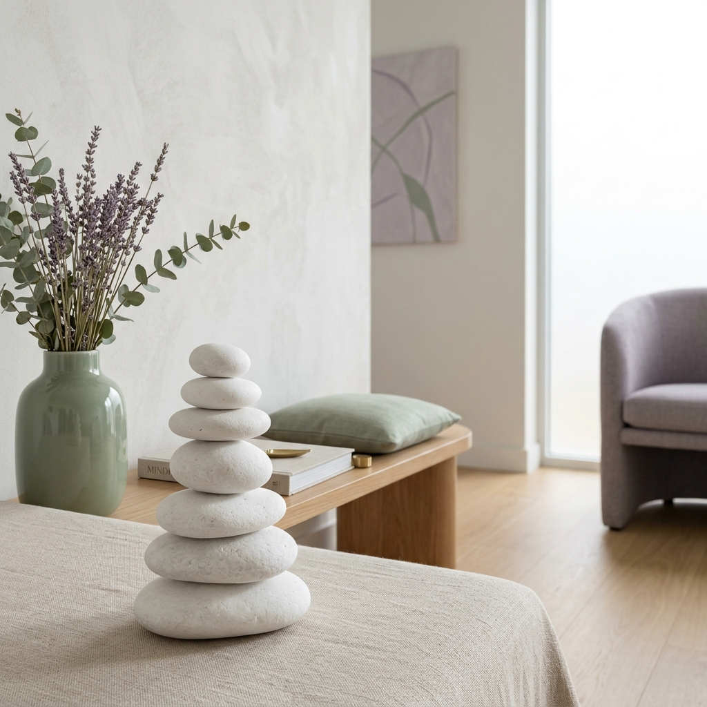
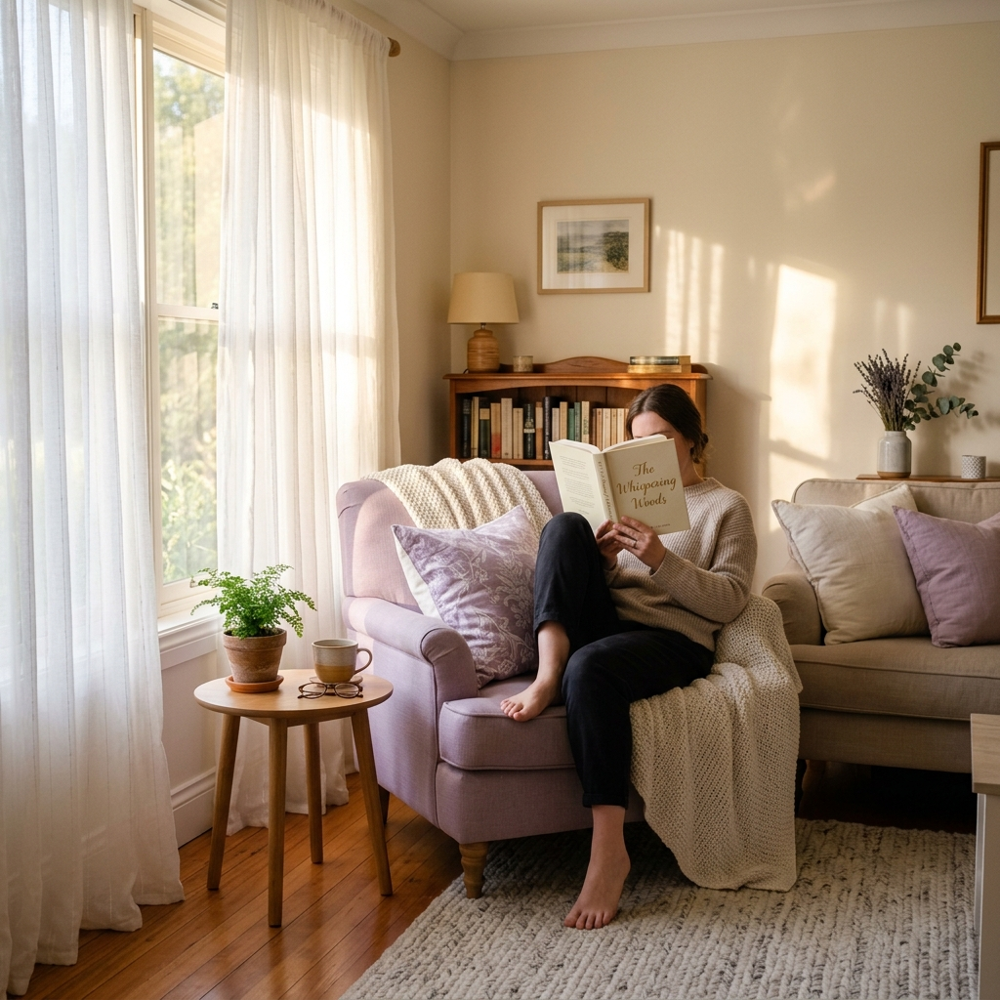
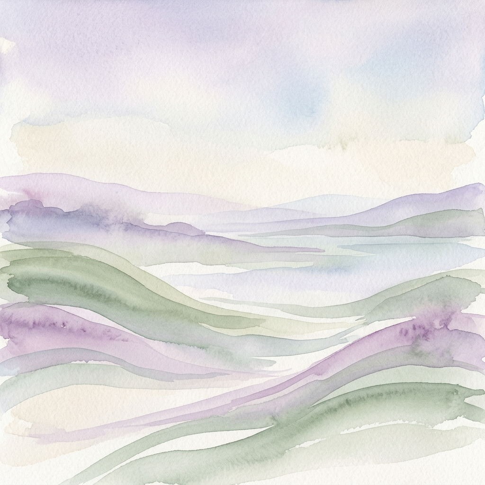
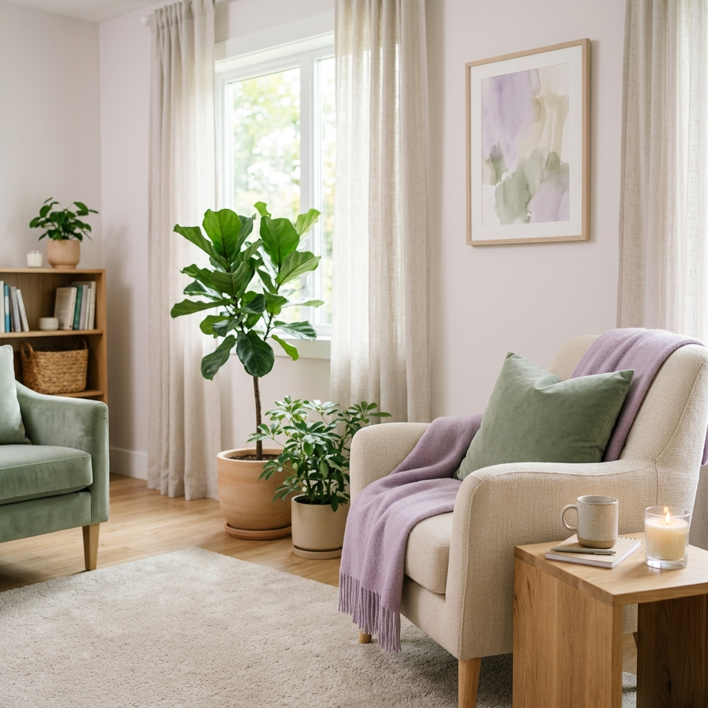

Apoio psicológico especializado para adultos, crianças e adolescentes. Encontre a estabilidade emocional e o bem-estar através de uma abordagem integrativa, humana e focada em si.
O meu propósito é guiar cada pessoa rumo a uma vida mais equilibrada, consciente e plena. Acredito que todas as dificuldades emocionais podem tornar-se oportunidades de transformação quando acompanhadas com empatia, respeito e conhecimento científico.
Sou Mestre em Psicologia Clínica e da Saúde, com diversas formações nas áreas do desenvolvimento pessoal, regulação emocional, ansiedade, autoestima e bem-estar psicológico. A minha prática assenta numa abordagem centrada na pessoa, integrando conhecimento científico atualizado com uma escuta genuína e humanizada.
Crio um espaço seguro, acolhedor e confidencial, onde cada pessoa se sente verdadeiramente ouvida, compreendida e respeitada, sem qualquer julgamento.
A minha missão é ajudá-lo(a) a desenvolver ferramentas para gerir a ansiedade, superar momentos de depressão, fortalecer a autoestima e promover um maior equilíbrio emocional, sempre respeitando o seu ritmo, a sua história e a sua individualidade.
Inscrição nº 30549. A minha prática rege-se rigorosamente pelo Código Deontológico da OPP, garantindo sigilo profissional absoluto e ética em todas as sessões.
Apoio especializado e individualizado para enfrentar os mais diversos desafios de saúde mental, em todas as fases do desenvolvimento humano.
Ferramentas práticas para gerir crises de ansiedade, ataques de pânico e preocupação excessiva.
Tratamento e suporte na recuperação da perturbação depressiva, falta de energia e apatia.
Avaliação e acompanhamento de Perturbação de Hiperatividade e Défice de Atenção.
Acompanhamento terapêutico nas fases do luto, perda de entes queridos, emprego ou relações.
Apoio no esgotamento físico e mental, stress laboral crónico e redefinição de limites.
Dificuldades emocionais, bullying, problemas de aprendizagem e adaptação escolar.
Promoção do autoconhecimento, confiança e desenvolvimento da identidade pessoal.
Gestão de conflitos interpessoais, desafios da parentalidade e dinâmicas familiares.
Baseio-me em modelos cientificamente validados, adaptando as técnicas às suas necessidades específicas para maximizar a eficácia do tratamento.
Combina diferentes modelos terapêuticos (humanista, sistémico, psicodinâmico) adaptados à pessoa. Permite uma visão holística e flexível, garantindo que o tratamento se ajusta a si, e não o oposto.
Abordagem com forte evidência científica. Foca-se em identificar padrões de pensamento distorcidos e comportamentos desadaptativos, sendo altamente eficaz para ansiedade, depressão e fobias.
Técnica terapêutica baseada em evidência que facilita o acesso a recursos internos. Excelente complemento para regulação da ansiedade, fobias, gestão emocional, luto e motivação profunda.
Flexibilidade para receber o apoio que precisa, onde quer que esteja.
A maior recompensa do meu trabalho é testemunhar a evolução e o bem-estar de quem confia no meu acompanhamento.
"Quero deixar o meu agradecimento à doutora Susana. Tenho me sentido muito melhor desde que sou acompanhada por si. A sua simpatia, a sua preocupação e os conselhos que me dá têm ajudado bastante."
"A Doutora Susana é uma excelente profissional. Desde o princípio demostrou uma enorme empatia e preocupação com o meu caso. Ajudou-me imenso a superar os meus problemas."
"Encontrei a Dra. Susana numa altura em que estava especialmente frágil. Foi por acaso que fui ter ao seu consultório mas não foi por acaso que fiquei. Recorro às consultas de psicologia clínica, que me fazem sempre sair do seu consultório mais leve e bem-disposta. O espaço e tempo que a Dra Susana nos proporciona faz-nos sentir seguros e à vontade. Já fiz também consultas de hipnose clínica. Confesso que estava céptica, no início. A Dra Susana percebeu e, sem nunca me impor nada, explicou-me o que estaria por trás e, ao pormenor, como seriam as sessões. Assim, comecei as sessões. Mais uma vez, fiquei. Cada sessão é viagem, carinhosamente guiada. Os resultados vão-se mostrando ao longo do tempo, nas mais pequenas coisas do dia-a-dia. Em vias de dúvida, esta será sempre uma escolha segura! Obrigada Dra!"
"A Susana é uma excelente profissional, tem conhecimento e concilia várias áreas da psicologia, desde o tradicional ao alternativo. Sinto que a Susana foi e é uma grande ajuda na minha vida. Sou grata por ter encontrado a Susana."
"Cada consulta, é uma experiência única de terapia e viagem interior. Somos guiados ao som da voz angelical da Susana e de uma sublime e maravilhosa melodia.. Experimentem, sintam, vivam a experiência por vós mesmos"
Esclareça as suas dúvidas sobre o funcionamento das consultas de psicologia.
Cada sessão tem a duração de aproximadamente 50 a 60 minutos.
Se sente que as suas emoções estão a afetar negativamente o seu dia-a-dia, as suas relações, o seu sono ou a sua produtividade, pode ser um bom momento para procurar apoio psicológico. Dificuldades em lidar com ansiedade, stress crónico, tristeza profunda ou luto são fortes indicadores.
Sim. Tenho experiência no acompanhamento de crianças e adolescentes, focando-me nas suas necessidades emocionais específicas e trabalhando em conjunto com as famílias quando necessário.
A TCC é uma abordagem focada em identificar e modificar padrões de pensamento e comportamento disfuncionais. É altamente eficaz para a ansiedade, depressão e fobias.
A consulta online decorre por videochamada utilizando plataformas seguras e encriptadas, com a mesma confidencialidade e qualidade da sessão presencial. Só precisa de um dispositivo com câmara, microfone e uma boa ligação à internet, num espaço onde tenha privacidade.
Solicito que qualquer cancelamento ou reagendamento seja feito com pelo menos 24 horas de antecedência. Cancelamentos com tempo inferior podem estar sujeitos a cobrança da sessão.
Seixal, Margem Sul
+351 910 215 633
Em Todo o Mundo